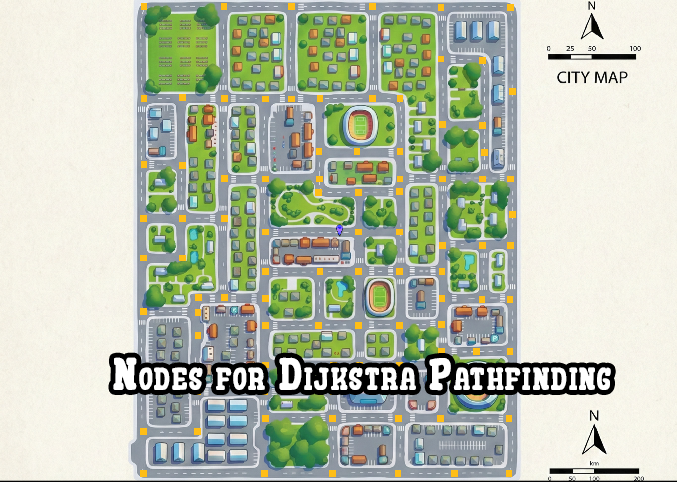
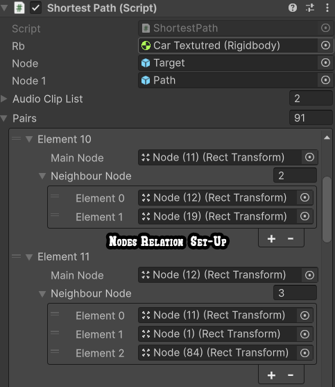
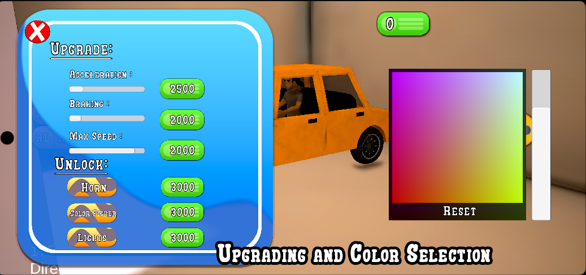
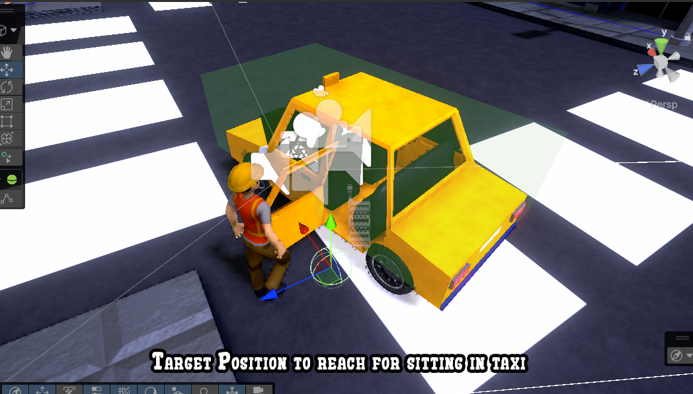
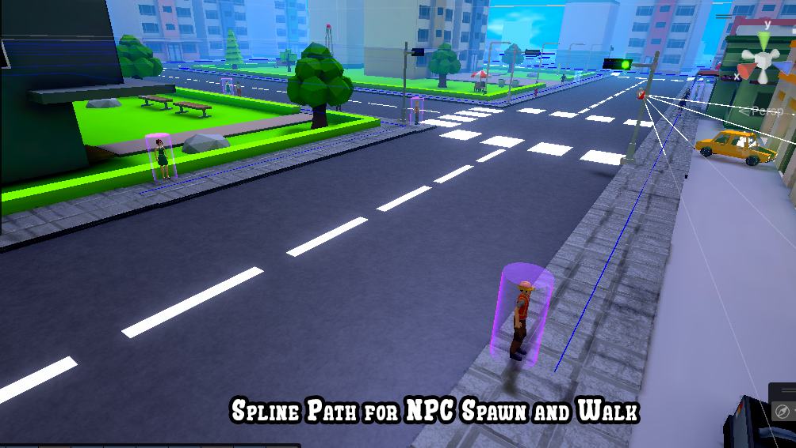

The Mission
Taxi Driving Simulator is designed as a system-driven open-world experience where the player takes on the role of a taxi driver navigating a responsive urban environment. The primary objective is not only to transport passengers efficiently, but to manage time, resources, and decision-making within a dynamic simulation.
The game emphasizes player immersion and control flexibility through seamless switching between first-person (FPS) and third-person (TPS) perspectives, combined with a steering wheel-based driving system. This allows players to choose between realism and situational awareness based on gameplay needs.
A layered progression system enables players to upgrade their taxi and customize its appearance through a dynamically generated color selection system. Alongside this, a fuel management system and an economy with loan mechanics introduce strategic planning, encouraging players to balance earnings, expenses, and risk.
Technical Breakdown
🚗 Physics-Based Driving & Custom Input System
Developed a fully physics-driven vehicle controller using Unity’s physics systems:
- Utilized Unity Rigidbody for realistic collision, drag, and mass simulation
- Implemented Wheel Collider for: Suspension modeling, Tire friction and traction, and Torque-based acceleration and braking
🎮 Custom Steering Wheel (Touch Input)
Built a custom on-screen steering system using IDragHandler, IPointerDownHandler, and IPointerUpHandler.
Logic:
- Calculates finger angle relative to steering center
- Computes delta between consecutive angles
- Applies delta rotation to steering wheel
Features:
- Real-time wheel turning synced with physics
- Auto-centering steering (returns to 0° on release)
- Visual + physical feedback loop for simulation realism
🧠 Pathfinding & Navigation System
Implemented real-time navigation using Dijkstra's Algorithm on a custom graph.
Graph Construction:
- Used a static 2D map instead of render textures
- Road intersections represented using UI images as graph nodes
- Custom graph structure containing: Main node (UI Image), List of connected nodes, and all nodes linked using a linked list-based structure configured via Inspector
Navigation Flow:
- Taxi world position (X, Z) mapped to 2D coordinates
- On map click: Destination node selected, nearest nodes to player & destination calculated
- Dijkstra: Computes shortest path and stores result as linked list path
- Movement refinement: Uses divide-and-conquer interpolation between nodes
- System runs continuously: Updates every ~1.2 seconds during movement
🚶 Passenger Interaction & Seating System
Designed a dynamic passenger lifecycle system for immersion.
Entry System:
- Custom taxi model with an interior and individually operable doors
- Each door opens/closes independently and spawns a trigger collider at the entry point
- Using Unity NavMesh: NPC navigates to trigger, snaps to position on proximity, and plays sitting animation
Camera System:
- Hybrid: FPS (immersive seat perspective) and TPS (external view)
Ride Flow:
- On boarding: Destination marker created (map + 3D world)
- On reaching destination: Automatic passenger drop-off and seat reset
Seat Management:
- Max capacity: 3 passengers
- Dynamic seat allocation: Prevents overlapping via trigger disabling, allows picking new passengers if seats available
⛽ Fuel & Traffic Systems
Fuel System:
- Time-based depletion using
Time.deltaTime - Stops decreasing below threshold (~100 units)
- Gameplay restriction: Cannot pick new passengers below threshold, but existing rides continue
🚦 Traffic Signal System:
- Uses angle comparison between taxi and signal orientation
- Ensures: Penalties only for valid violation direction, preventing false positives from wrong approach angles
💡 Lighting & Visual Pipeline
Lighting:
- Used Unity Light Baking for precomputed lighting
- Integrated Adaptive Probe Volume for dynamic lighting on moving objects
Rendering & UI:
- Built shaders using Unity Shader Graph: Sky rendering, UI visuals
- UI/Textures created using Adobe Photoshop
⚙️ Upgrade System
Centralized upgrade script modifies: Max speed, Motor torque, and Brake torque. Applied to active vehicle controller at runtime.
Features:
- Scalable for future vehicles
- No hardcoded configs
- Reusable upgrade logic across prefabs
🎨 Runtime Color Customization
Procedural color wheel generated using Unity Color Struct.
Process:
- Texture generated at runtime
- R channel fixed initially, G & B varied per pixel to create spectrum
- Slider: Dynamically modifies R, recomputes color space
Result:
- Fully dynamic color picker
- No pre-made assets required
- Smooth real-time customization
🌍 NPC Spawn & Despawn System (Spline-Based Streaming)
Designed an optimized runtime NPC streaming system using Unity’s spline framework.
Spline Structure:
- Spline Container: Multiple splines, each spline contains knots (spawn points)
- Custom struct:
splineIndex→ spline reference,knotIndex→ knot reference
Initialization:
- Iterated all splines & knots
- Built dictionary: Key → world position (Vector3), Value → struct (splineIndex + knotIndex)
- Maintained parallel LinkedList of positions for traversal
Spatial Streaming System:
- Range-based filtering: Active nodes = knots within radius of taxi
- Updates continuously as taxi moves
State Management:
- Secondary dictionary: Key → knot position, Value → bool (spawned or not)
- Handles: Already spawned nodes, Newly entered nodes
NPC Spawning Logic:
- For each active node: If state == false, spawn NPC using probabilistic randomness and set state = true
NPC Despawning Logic:
- When node exits range: Destroy NPC and reset state = false
System Characteristics:
- Prevents duplicate spawns, handles mixed-state nodes efficiently, and supports continuous streaming with movement
- Optimized using: Dictionary lookups, Spatial filtering, and Linked list traversal
- Fully compatible with moving player (taxi-based gameplay)
🌟 Final System Overview
This project integrates:
- Physics simulation
- AI navigation
- Graph-based pathfinding
- Procedural systems
- Runtime streaming
- Custom UI & input
- Scalable architecture
To create a responsive, immersive, and system-driven taxi simulation experience.